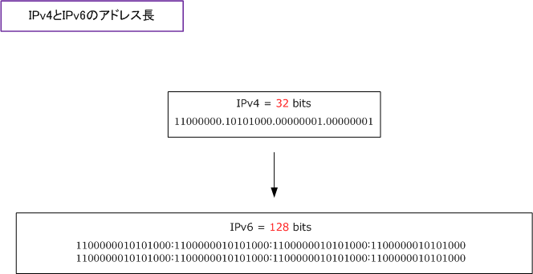
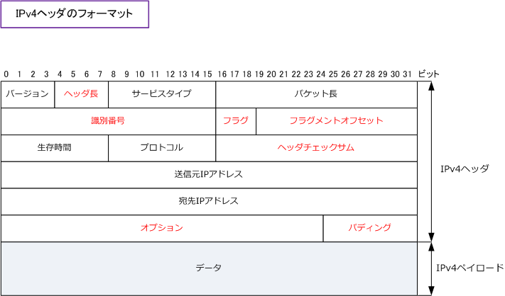
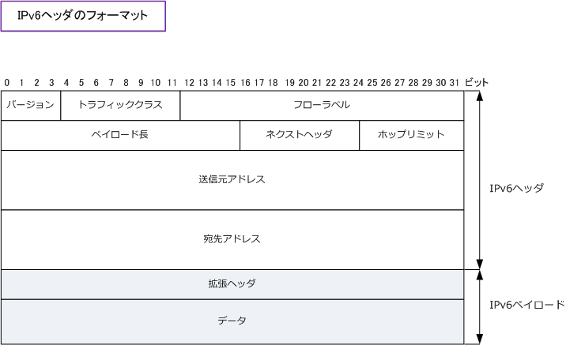

IPv6
IPv6とは
IPアドレスといえば、一般的にIPv4アドレスを指します。このIPv4アドレスが企業ネットワークだけでなく インターネットなどで広く利用されているプロトコルです。IPv4はアドレス長が32ビットなので最大43億 の割り当てが可能ですが、世界的に利用者が急増したことで、IPアドレスが枯渇する可能性が出てきました。
そこで開発されたのがIPv6 ( Internet Protocol version 6 ) です。IPv6は、アドレス長が128ビットなので 最大340澗 ( 340,282,366,920,938,463,463,374,607,431,768,211,456 ) 個のIPアドレスを割り当てる ことが可能になり、IPアドレス枯渇の問題は解消し、アドレス不足によるNATやPATの実装も不要となります。

IPv6の特徴
| IPv6の特徴 | 説明 |
|---|---|
| 広大なアドレス空間 | IPv6は128ビットアドレスであることから、事実上無制限にIPアドレスをデバイスに割り当てられる。 |
| 自動設定機能 | IPv6アドレスの自動設定機能により、例えばクライアントPCは自動的にIPv6アドレスを使用できる。 |
| 効率的な経路集約 | IPv6アドレスの階層構造が厳密であるため、より効率的な経路集約を実現し、ルータの負荷を軽減。 |
| シンプルなヘッダ | IPv6の簡素なヘッダにより、パケット転送の際のルーティング処理による負荷が軽減される。 |
| モビリティ（移動性） | IPv6のMobile IPv6により移動通信中でも同一のIPアドレスを使用して通信を途切れなく通信できる。 |
| セキュリティ（安全性） | IPv6はIPsecの実装が必須であり、実装させたい場合は、特別な機器を必要せずIPsecを実装できる。 |
IPv6のヘッダ
IPv6のヘッダは、パケット転送時に必要な制御情報のみを「固定長の基本ヘッダ」に組み込んでいます。 そして、パケット転送時に必ずしも必要としないオプション情報は「拡張ヘッダ」に組み込むことにより IPv6パケットを受信したIPv6対応ルータは、パケット転送の際に固定長の基本ヘッダさえ読み取れば転送 することができます。これで余分なヘッダを読み込まずにすみルーティング処理速度を向上させられます。
先ずはIPv4のヘッダを見てみます。IPv4ヘッダの赤文字のフィールドは、IPv6では削除されるフィールド。

IPv6ではヘッダチェックサムが削除されていますが、そもそもTCPやアプリケーション側でエラーチェック を行っているためIPレベルのエラーチェックは不要だとして削除されました。一方「フローラベル」という 新たなフィールドが追加されました。フローラベルは、通信経路の品質確保、経路の優先選択のために使用。
IPv4のプロトコルフィールドはIPv6ではネクストヘッダに名称が変更されているだけで、次にくるヘッダ タイプや上位層プロトコルを指定する情報です。 IPv6では「ネクストヘッダ」にTCP/UDPなどの上位層の プロトコルが指定されている場合は、拡張ヘッダがないと判断します。拡張ヘッダとは、IPv6ヘッダ以下の 付加的な情報がある場合に基本ヘッダの後につけるヘッダのことです。複数の拡張ヘッダを使用する場合は 拡張ヘッダを連結させます。

| 各フィールド | ビット数 | 説明 |
|---|---|---|
| バージョン | 4 | IPv6 を意味する 「 0110 」 |
| トラフィッククラス | 8 | IPv4のToSに該当するフィールド。パケット送信時のQoSを指定。 |
| フローラベル | 20 | 通信経路の品質確保、経路の優先選択のために使用。いわばQoS。 |
| ペイロード長 | 16 | IPv6ヘッダを除く、「拡張ヘッダ」と「ペイロード」のデータ部の長さ。 |
| ネクストヘッダ | 8 | IPv4の 「プロトコル」 に該当するフィールド。拡張ヘッダや上位プロトコルの タイプを表す。拡張ヘッダが複数ある場合、最初の拡張ヘッダのタイプを表す。 |
| ホップリミット | 8 | IPv4のTTLに該当するフィールド。通過できるルータの数を制限する。 |
| 送信元アドレス | 128 | 送信元のIPv6アドレス |
| 宛先アドレス | 128 | あて先のIPv6アドレス |
| 拡張ヘッダ | 可変 | IPv6ヘッダーは固定長(40オクテット)であり、オプションをヘッダ内に付加 できないが、IPv6では拡張ヘッダで機能を拡張できる。サイズは可変である。 |
セキュリティ（IPsec）とモビリティ（Mobile IP）
IPsec、Mobile IPの両方ともIPv4、IPv6の両方で使用可能ですが、IPv6ではIPsecが標準でサポートされて おり、またMobile IPについても現在の接続を中断せずに移動できるように実装されています。IPsecは全ての IPv6ノードで有効にされ使用可能となっているため、IPv6によるインターネットはよりセキュアになります。